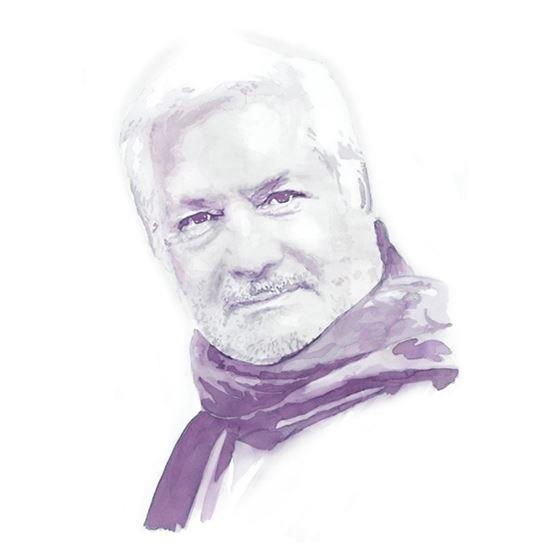

Avec leur Piccoli, ils ont fait remonter en moi Georges Delerue. La musique du Mépris, film que je n'ai jamais vraiment regardé, ou seulement par morceaux. Ça remonte de très loin, de très profond, de cette zone où les choses baignent dans une sorte de soupe primordiale indifférenciée, dans cette zone où l'on n'est pas occupé à juger, où l'on reçoit les choses en pleine poire sans les comprendre, disons entre quinze et vingt ans.
J'ai même longtemps confondu la musique de Delerue et l'adagio de Barber, c'est dire si je ne prêtais pas vraiment attention à ce que j'entendais. En fait, j'avais instantanément classé cette musique dans la rubrique mauvais goût, ou « musique de cinéma », ce qui était (et l'est toujours) peu ou prou la même chose.
Récoutant aujourd'hui ce Thème de Camille, je m'aperçois qu'il me bouleverse, qu'il m'oppresse, qu'il me plonge dans un malaise presque insupportable. Piccoli n'est pas étranger à ça, non plus que Bardot. J'en ai profité pour récouter aussi la chanson d'Hélène, dans le film Les choses de la vie, interprétée par Romy Schneider et Piccoli. Je ne me souviens plus du tout du film, dont le titre me plaisait tant quand j'avais quatorze ans. C'est à peu de choses près le même malaise qui m'envahit. J'avais tout simplement oublié la terrible oppression que peut causer l'abandon, dans un cœur sensible. Sans doute me suis-je protégé, à mon insu, au fur et à mesure de mes désillusions amoureuses. On continue de se raconter que la peine d'amour est terrible, même quand on a cessé depuis longtemps de l'éprouver, cette sensation de suffocation, de panique, et même de terreur. Oui, c'est la même sensation que celle qu'on éprouve quand l'air vient à manquer, qu'on cherche le salut qui n'existe pas. Toutes les portes sont closes. Personne ne viendra nous secourir. J'ai du mal à écrire ces mots…
J'ai croisé Piccoli un jour, dans la rue Saint-Antoine, à Paris. Il venait de Bastille, moi j'y allais. C'était à peu près devant la boulangerie, si elle existe tojujours, un peu avant la rue Castex. Je l'ai regardé à la dérobée. Grand, il me faisait peur, avait l'air plus ou moins furieux. Je ne lui trouvais rien de sympathique, au contraire. À l'époque, je l'avais entendu lire à la radio un extrait d'Avril brisé, d'Ismaïl Kadaré, livre que j'avais lu dans la foulée avec un immense bonheur. Je ne sais pourquoi je pense à ça, je ne sais pas comment raccorder ce souvenir avec l'angoisse profonde dont je tente de parler ici, mais je sais qu'il y a un rapport. Romy Schneider était quelque chose comme mon idéal féminin, quand j'avais vingt ans. Bardot, pas du tout. (idéal féminin, c'est débile. Je n'ai aucun idéal féminin.) Ce que j'ai appris plus tard, c'est qu'elle est sans doute morte dans l'appartement que j'avais juste sous les yeux quand je regardais par la fenêtre, à cette époque-là, l'appartement de Brialy, place des Vosges. En 82 je n'y habitais pas encore, mais je venais régulièrement voir ma tante, qui me disait invariablement : « Ne regarde pas. Mes neveux sont polis ! » Contrairement à ce qu'elle pensait peut-être, je n'avais aucune curiosité pour Jean-Claude Brialy, contrairement à elle, mais j'aimais bien observer ce qui se passait chez les voisins. Brialy, je l'avais croisé quelquefois en montant chez ma tante, et je faisais toujours celui qui n'avait aucune une idée de qui il était. Bonjour, bonsoir, on se tient la porte, c'est tout. Pas de sourires, rien. Je n'ai appris que bien plus tard ce qui était arrivé dans son appartement, et, à l'époque, si on m'en avait parlé, je n'aurais pas écouté. Quand-même, ça me fait drôle, de penser à Romy Schneider, de la voir à l'écran, avec ses lunettes, se retourner sur Piccoli, alors qu'elle tape à la machine et qu'elle chante. Dès qu'elle sourit, ça y est, ça revient, cette sale angoisse qui me tord le bide, et je vois la face de l'autre, le sale con de Piccoli, et j'entends : « Tu ne m'aimes plus ». Insupportable. Je cherche l'air pendant qu'elle croque dans sa pomme.
Je ne sais plus du tout ce que je voulais dire. Je réponds au téléphone alors que j'écris, ça m'apprendra. La petite Agathe a perdu son chat, elle est bien malheureuse. Je pourrais lui en parler des heures, de ces horreurs. Mais revenons à Delerue et à sa musique de merde. On baisse le son, parce que quand-même, on a honte d'écouter ça (la-ré-fa#-mi-fa#-ré-la-ré-fa#-mi-fa#-ré-la…), s'il n'y avait pas les fesses de Bardot, on ne s'y serait sans doute jamais intéressé.
Moi, Godard, ce sont ses derniers films, que j'aime, pas les premiers. Je vous salue Marie, Nouvelle Vague, Histoire(s) du cinéma, For ever Mozart, JLG/JLG, Éloge de l'amour, Adieu au langage, ça oui, mille fois oui. Sinon, Week-end, à cause de Mozart. Pierrot le fou, À bout de souffle, bof. N'empêche. Même dans le Mépris, au-delà des poses et du cinéma qui se regarde faire du cinéma, il y a cette chose, là, qui me broie le ventre, le désespoir amoureux, quand ça ne marche pas. Et cette mélasse sonore, cette bouillie insupportable de niaiserie qui colle aux doigts, qui n'arrive pas à nous dégoûter d'elle-même. Je me vautre là-dedans, c'est comme de manger de la crème Mont-Blanc praliné, ou de tirer sur le tube de lait concentré qu'on a planqué sous le lit. Éteins la lumière, qu'on ne voie pas que je bande ! (Tu peux pas comprendre. Maintenant, les gosses de quatorze ans envoient des photos de leur bite en érection à leurs copines.)
Il y a tellement de chose, que tu ne peux pas comprendre. « Musique de film », quand j'avais seize ans, c'était synonyme de merde. On a finalement méprisé le cinéma à cause de ses "musiques". Un art qui trempe là-dedans n'est pas grand-chose. Le pire de ce que pouvait nous donner "la bourgeoisie", c'était ça. D'ailleurs, il suffit de voir où ça nous a menés. Les cinéphiles sont des archi-ploucs imbéciles déguisés en experts, des crétins crottés qui craquent à la guimauve. Ils mangent des barbes-à-papa qu'ils voudraient nous faire prendre pour de la haute gastronomie. Ils peuvent bien disserter sur la morale du travelling ou du plan-séquence, ils resteront toujours des ploucs déguisés en aristos. Là encore, il suffit de regarder ce qu'on a sous les yeux, ici et maintenant. Pas un cinéaste n'est à sauver, sauf Godard, justement, parce qu'il fait autre chose que du cinéma. Il a bien compris, lui, qu'il n'y avait rien à sauver dans cet art de pèquenauds. Ou alors il faut aller du côté du documentaire. Claude Sautet, je préfère encore Bonne nuit les petits ou bien Exhibition, de Jean-François Davy, avec la charmante Claudine Beccarie. S'il faut vraiment sauver un cinéaste, je dirais Luc Moullet. Pas plus.
Donc la belle Romy était en train de crever, là, au numéro 3 de la place des Vosges, pendant que ma tante était en train de crever dans le lit de ma mère, à l'autre bout de la France. « Viens la voir » me suppliait ma mère. « Elle te réclame. » Trop con, trop occupé, trop jeune, trop bête, trop amoureux, trop loin. L'appartement, j'allais parfois y dormir, quand je venais donner mes cours à Paris. Dans le lit de ma tante. Dans ses meubles. Dans sa vaisselle. Tout était en l'état. Un mausolée. Toutes les odeurs étaient encore là. Ma copine ne comprenait pas : « Comment peux-tu aller dormir là-bas ? » Il ne manquait qu'un piano. Mais dès mes cours donnés, je fonçais m'enfermer au fin fond de la Bourgogne, avec mon chat Inouï et Bach et Beethoven.
Est-ce que tante Glyne aimait Piccoli ? Je n'en sais rien. En revanche elle aimait Alain Delon et détestait Juliette Gréco. « Cette pute », qu'elle avait lâché un soir, devant la télé. J'avais piqué un fou-rire mais je ne lui donnais pas tort. Elle passait chez Pivot, et se vantait connement de ne pas porter de montre. « Je suis une femme libre ! » avait-elle claironné en prenant un air mystérieux, pendant que Jacques Attali prenait un air intelligent. Tatie, tu reveux un marron glacé ? Bon, c'est vrai que Gréco avait un avantage sur Annie Ernaux (je ne sais pas pourquoi je pense à elle), c'est qu'elle avait couché avec Miles Davis. Mais Piccoli, je ne sais pas pourquoi, je ne l'imagine pas du tout en train de faire l'amour à une femme. Non, vraiment pas. Un acteur et puis rien d'autre.
La musique de Delerue a ceci de commun avec l'adagio de Barber que ça s'étire toujours plus, comme un Malabar qu'on se tire de la bouche — ça ne craque jamais, ces choses-là — et pendant ce temps-là, on réfléchit, on rêvasse, on se ramollit l'esprit dans un bain de merde. C'est un peu le même geste que ces femmes qui se passent un doigt dans les cheveux et l'enroulent autour d'une boucle à la Escher, ou un anneau de Mœbius. (La musique de Barber, on la sent pousser en temps réel, nanomètre par nanomètre, comme une barbe…) Ça peut durer très longtemps. On a l'impression d'un geste banal, un peu bête, automatique, enfantin, alors qu'il y a un désespoir sans nom qui tourbillonne là-dedans, et je vois le sourire de Romy Schneider. C'est affreux, d'aimer une femme ! Faut comprendre ça. C'est atroce. C'est pire que tout. C'est pire que l'enfer.
Partager cette page